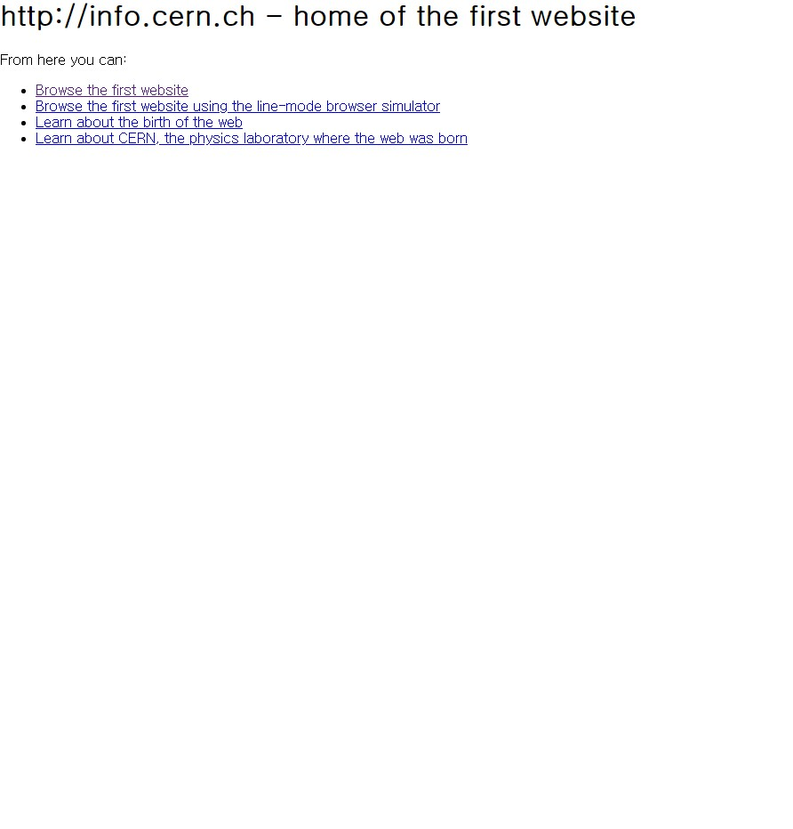

191129_배운점
- 웹페이지를 만드는 것과 인터넷으로 소통하는 것.
- 소비자가 아닌 생산자가 되기 위해서는 혁명의 시작이 어떻게 되어야하는지 알아야한다.
- 웹은 인터넷의 부분집합이다.
- 1960년에 미국 핵공격으로 인해 통신시스템의 분산을 위해 인터넷이 시작되었다.
- 1990년에 스위스 CERN에서 팀 버너스 리가 월드 와이드 웹을 만들게 되면서 웹은 시작되었다.
- info.cern.ch 이 주소가 처음으로 만들어진 웹페이지이다.

- 웹 브라우저(client)는 웹 서버(server)에게 요청하는 존재며 반대는 응답하는 존재다.
- 우리는 지금까지 웹 브라우저를 제어하는 방법을 배웠고, 이제부터는 웹서버를 배울 것이다.
- 공부의 목적은 익숙해지기 위함이다.
- 웹서버에 익숙해지면 내가 만든 컨텐츠를 인터넷을 사용하는 누구나 사용할 수 있도록 할 수 있다.
그러기 위해서는 우리에겐 두 개의 갈림길이 있습니다.
- 하나는, 웹서버를 직접설치하는 방법이나 이것은 어렵습니다.
- 하나는, 웹서버를 제공해주는 업체인 웹호스팅을 이용하는 것입니다.
- 서버를 유지하기 위해서는 컴퓨터가 항상 켜져있어야 한다. 그리고 외부로 정보를 전송할 수 있도록 설정해야한다.
- 이렇게 설정되어 있는 컴퓨터를 빌려주는 사업을 호스팅이라 한다.
위의 사이트를 통해서 호스팅을 하기위해 회원가입, 로그인, 저장소(repository)를 생성할 것이다.